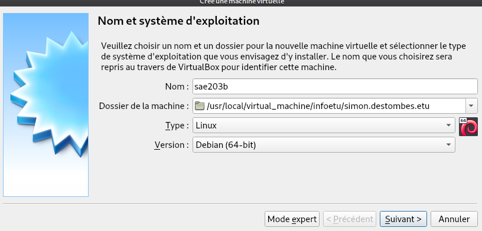
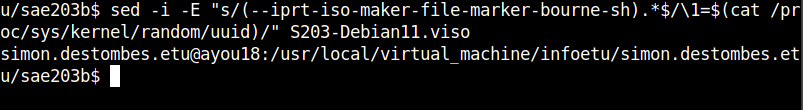
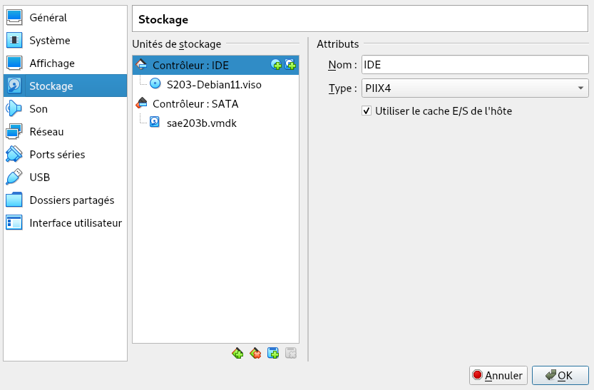
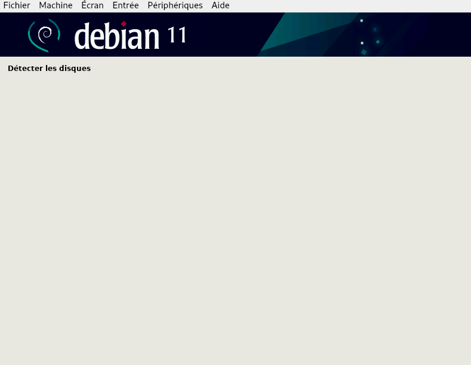
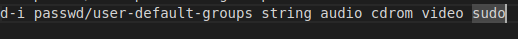
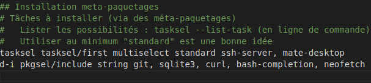

CPU count= où vous pouvez entrer le nombre que vous voulez.
Cela modifiera le nombre de processeurs utilisés par la machine
virtuelle.La commande adduser user sudo permet d’ajouter
l’utilisateur user au groupe sudo.
Il y a 2 manières de voir les groupes d’un utilisateur :
groups |
permet de voir les groupes de l’utilisateur courant |
|---|---|
groups user |
permet de voir les groupes de l’utilisateur nommé user |
Pour connaître la version du noyau linux utilisée, il suffit de taper
la commande uname -mr dans le terminal. La version de notre
VM est la 5.10.0-21-amd x86_94
Les suppléments invités permettent un meilleur confort dans l’utilisation de la VM. Par exemple : * Le presse-papiers est partagé entre la machine virtuelle et la machine hôte. * Les dossiers peuvent être échangés entre la VM et la machine hôte. * Le pointeur de souris est le même pour la VM et la machine hôte ce qui permet de ne plus appuyer sur la touche hôte pour ré-utiliser la souris sur la machine hôte.
Dans un cas général, la commande mount permet de monter
un système de fichier qui est disponible sur un périphérique quelconque.
Dans notre cas, elle monte les fichiers nécessaires permettant
d’utiliser les fonctionnalités des suppléments invités.
Debian a été créée par Ian Murdock le 16 Août 1993, pour distribuer Linux gratuitement et facilement. Debian et composer de millier de logiciel libre grace a des volontaire, le nom tire son origine de son créateur Ian Mordock et Debra sa femme. Source(s) : https://www.debian.org/doc/manuals/project-history/intro.fr.html#pronouncing-debian
La prise en charge à long terme étendue (ELTS) est une offre commerciale offrant un prolongement de la durée de vie de 10 ans des versions de Debian (c’est-à-dire de 5 ans après la prise en charge de 5 ans offerte pas le projet LTS). Il ne s’agit pas d’un projet officiel de Debian. L’infrastructure de Debian, et les autres ressources de Debian ne sont pas impliquées. Source(s) : https://wiki.debian.org/fr/LTS/Extended
L’équipe chargée de la sécurité essaye de prendre en charge la distribution stable environ une année après que la version stable suivante a été publiée, sauf lorsqu’une autre distribution stable est publiée la même année. Il n’est pas possible de prendre en charge trois distributions, c’est déjà bien assez difficile avec deux. Source(s) : https://www.debian.org/security/faq.fr.html#lifespan
Debian a toujours au moins trois versions activement entretenues : stable, testing et unstable. Source(s) : https://www.debian.org/releases/index.fr.html
Ce sont juste des noms de code. Quand une distribution Debian est en cours de développement, elle n’a aucun numéro de version mais un nom de code. Le but de ces noms de code est de faciliter la copie sur les miroirs des distributions Debian (si un véritable répertoire comme unstable est soudainement renommé en stable, beaucoup de choses devraient être inutilement téléchargées). Source(s) : https://www.debian.org/doc/manuals/debian-faq/ftparchives.fr.html
Il y a 7 architectures différente de Bullseye Source(s) : https://www.debian.org/releases/index.fr.html
Le premier nom de code utilisé est le nom Buzz sortie le 17 juin 1996 et son numéro de version est la version 1.1 Source(s) : https://fr.wikipedia.org/wiki/Historique_des_versions_de_Debian
Nous demarrons, bien sûr par cette installation par la creation
d’une machine virtuelle dans virtualBox, les caractéristiques sont les
mêmes que pour la première installation

Il faut maintenant recuperer le fichier bootable qui va nous
permettre cette installation grâce à cette commande ci-dessous.

L’ajouter en temps que disque visible par notre machine
vrtuelle

Et demarrer l’ordinateur, a ce moment l’utilisateur ne doit rien
faire

Apres cela on se rend compte qu’il n’y a pas tout les outils que
l’on souhaite sur la machine virtuelle, il faut donc modifier le fichier
pressed. Ce fichier decrit en quelque sorte tous ce que
l’automatisation doit faire a notre place. Par exemple ici, on ajouter
les droits sudo a l’utilisateur.

on peut aussi ajouter une interface graphique, des logiciels etc…
grâce a la commande ci-dessous.

○ GIT-GUI est l’interface graphique de GIT git gui
○ GITK est un navigateur de dépôt graphique, il permet d’explorer et visualiser un dépôt GIT gitk
○ git config –global http.proxy [“lien du proxy”]
○ GITEA est un gestionnaire de code source ○ GitHub & GitLab
ici on configure le port necessaire
apres cela on peut commencer l’installation a l’aide de wget avec ces
commandes :
wget -O gitea https://dl.gitea.com/gitea/1.18.5/gitea-1.18.5-linux-amd64
chmod +x gitea
L’une pour telecharger la version souhaité, l’autre pour acquerir les
droits d’execution.
la prochaine etapes sont la creations de l’environnement avec l’ajout d’utilisateur, et du repertoire pour gitea. Les commandes utilisé sont adduser, mkdir, chown, chmod2
pour mettre a jour gitea, il suffit de mettre a jour le binaire et le remplacer a l’endroit de l’ancien. Cela n’effacera aucune configuration.
Ce rendu a été réalisé avec :